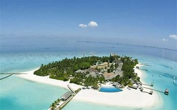

This island is famous for its golden sand beach and bluish green sea water. Four hours Sea journey from Port Blair.
Only one ship travels to and fro between Port Blair and Havelock. The journey starts at 6.00am reaching the island at 10.00am. The same ship returns at 2.00pm at Havelock and reaches Port Blair at 6.00pm. Travellers prefer to stay in this island as the colour of the beaches varies from early morning Sun light to evening dusk. Scuba diving and Snorkeling are available in these beaches.
There are divers clubs available and people from these clubs will escort if people are interested in scuba diving. Very good tender coconut and all varieties of meals available. People travelling through package trips, will get their lunch served in the ship itself. After getting down from the ship, the beach is 15-20 minutes journey by vehicle. This island is included in the standard package of Andaman trip. For one day package, visitors will get approximately 2 hours to enjoy in the beach. Near the beach, small tents and plastic chairs are available for rent to sit and enjoy. The water in the sea is bluish and the sand is shiny with reflections. The beach is very safe to play. Nearer to the beach, there is facility to change the dress. Fruits and snacks available at small shops.
Click on 'Book' button for fill up the details so that you cant visit this place for tour!!!